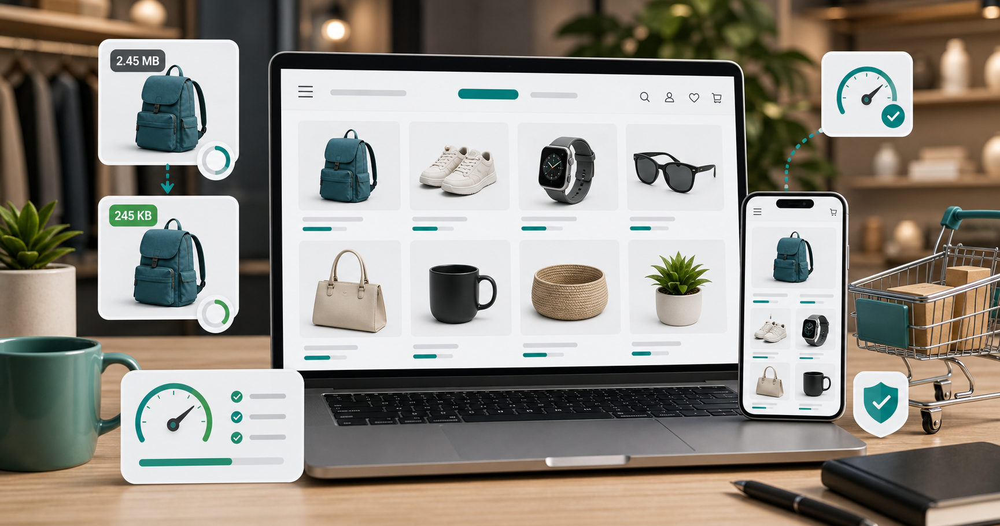

Ecommerce
Compress product images for ecommerce without losing trust.

Product images carry a lot of responsibility. They need to load quickly, but they also need to show texture, color, size, and detail. If you compress them too much, shoppers may hesitate. If you upload huge original files, pages can become slow, especially on mobile.
Start by separating image types. Main product photos deserve higher quality than tiny thumbnails. Gallery images can often be slightly smaller. Lifestyle images may tolerate more compression than close-up detail shots. A single setting for every image is convenient, but it is not always best for ecommerce.
For most product photos, JPG or WebP works well. JPG is safe and widely accepted by store platforms. WebP can be excellent for modern websites because it often produces smaller files at similar visual quality. PNG should usually be reserved for transparent product cutouts, logos, icons, or graphics. A normal product photo saved as PNG can become unnecessarily heavy.
Dimensions matter as much as quality. If your store displays product images at 1200 pixels wide, uploading 4000 pixel originals is usually wasteful. Keep a high-resolution master file offline, then create store-ready exports. For zoom features, you may need larger images, but they should still be compressed thoughtfully.
Check important details after compression. Fabric texture, jewelry edges, electronic ports, labels, and color gradients can reveal damage quickly. If a compressed image changes the perceived color of a product, raise the quality. A faster page is not worth misleading a buyer.
Use the CompressPixel image compressor for store-ready exports. For photo-heavy products, read how to compress JPG without losing visible quality. For format decisions, read JPG vs PNG vs WebP.
Consistency is important for ecommerce. If every product image has a different crop, background shade, and file size, the store can feel messy. Create a repeatable export style: same aspect ratio, similar background, similar width, and a sensible compression level. This makes category pages look cleaner and easier to scan.
For marketplaces, follow the platform rules first. Some marketplaces prefer white backgrounds, certain minimum dimensions, or specific file types. A perfectly compressed image is useless if it breaks the upload guidelines. Prepare a platform-ready version and keep your original edit file separately.
For your own website, test the product page on mobile. Product photos that look sharp on a desktop may feel slow on a phone if the files are huge. Compress gallery images, thumbnails, and related-product images. Shoppers often browse several products in one session, so small savings across many images can add up.
If you use lifestyle photos, compress them separately from plain product cutouts. Lifestyle images often contain more detail and may need slightly higher quality. Product cutouts on simple backgrounds can usually be lighter while still looking clean.
Remember that image quality affects returns and support questions too. If a photo hides texture, scale, or color, customers may misunderstand the product. Compression should remove wasted file weight, not useful buying information. Review the image as a shopper, not just as a site owner, and check whether the image answers the buyer's likely questions.
A good ecommerce workflow is simple: keep originals, crop consistently, resize for the store layout, compress, and review the final product page on mobile. The best product image is not the largest file. It is the clearest image that loads quickly enough for real shoppers.
Sources and further reading
- web.dev image performance explains how modern formats and smaller resources can improve load time.
- Google Image SEO best practices is relevant for product pages that rely on image discovery.